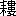

落葉松の溪に鵙鳴く淺山ゆ見し乘鞍は天に遙かなりき
鵙の聲透りて響く秋の空にとがりて白き乘鞍を見し
我が攀ぢし草の低山木を絶えて乘鞍岳をつばらかにせり
おほにして過ぎば過ぐべき遠山の乘鞍岳をかしこみ我が見し
乘鞍と耳に聲響きかへり見て何ぞもいたく胸さわぎせし
おもはぬに天に我が見し乘鞍は然かと人いはゞあらぬ山も猶
くしびなる山は乘鞍かしこきろ山の姿は目にかにかくに
乘鞍をまことにいへば只白く山の間に見し峰をそを我れは
うるはしみ見し乘鞍は遠くして一目といへどながく矜らむ
乘鞍はさやけく白し濁りたるなべてが空に只一つのみ
おろそかに仰げば低き蒼空を遙にせんと乘鞍は立てり
乘鞍は一目我が見て一つのみ目にある姿我が目に我れ見つ
まなかひに俤消たずたふときもの山に乘鞍人にはたありや
乘鞍は一目見しかばおごそかに年を深めてます／＼思ほゆ
［＃改ページ］
生きも死にも天のまに／＼と平らけく思ひたりしは常の時なりき
我が命惜しと悲しといはまくを恥ぢて思ひしは皆昔なり
往きかひのしげき
我が心萎えてあれや街行く人の一人も病めりとも見ず
知らなくてありなむものを一夜ゆゑ心はいまは昨日にも似ず
かくのみに心はいたく思へれや目さめて見れば汗あえにけり
しかといはゞ母嘆かむと思ひつゝたゞにいひやり母に知るべく
なにしかも命悲しといはまくに答ふることは我は知らぬに
なうれひそと人はいへどもまたけくてあらばかあらむ我愁ひざれや
人は我ははかなきものかひたすらに悲しといふもわがためにのみ
病院の一室に年を迎へて
我が命としほぎ草のさち草の
衰ふる我が顔さびしこゝにだにあけに映えよとあけの紙
明治四拾四年十二月廿四日、ふと出でありくことありて此の日ばかり夜に入りて病室に歸り來れば、むすびし儘に派手なる袱紗のつゝみ一つ電燈のもとにおかれたり、怪みて解きみれば我が爲に心づくしの品は出できにたるに、赤きインキもて書かれし手紙も添へられつ、四たびまで立ち入りがてに病院の門を行き過して、けふ始めておとづれきといふに思ひ設けぬことなれば待たんやうもなく、今は悔ゆれども及ばずなりぬ、されどわれ生れて卅三年はじめて婦人の情味を解したるを覺えぬ、我は感謝の念に堪へず、其の人一たびは我と手を携ふべかりつるに悪性の病生じたれば我に引き止めむ力もなく、斯くて離れたるものゝ合ふべき機會は永久に失はれ果てぬ、其の夜はふくるまで思の限り長き手紙に筆執りて、生涯の願いま一たびおとづれ給ひてんやと書きつけゝるを、夜もすがら思は掻亂れて、明くれば痛き頭を抑へつゝ庭の寒き梢に目を放ちて
四十雀なにさはいそぐこゝにある松が枝にはしばしだに居よ
袱紗の地はつゆ草の花のいろなるを、人は鬼怒川のみなかみに我とおなじ西岸に棲めれば、想を故郷の秋に馳するに、なよ／＼とせるつゆ草の馬の腹七たび過ぐれども根は絶えずなど俚言に聞きけることもいまはなか／＼に懷しく
鬼怒川の篠に交れる鴨跖草は刈る人なしに老ゆといはずやも
鬼怒川の岸のつゆ草打ち浸りさゝやくことは我はきけども
鴨跖草を岸に復た見ば我が思ふ人のあたりゆ持てりとを見む
いまにして人はすべなし
つゆ草の花を思へばうなかぶし我には見えし其の人おもほゆ
からまるを否とたれかいふ鴨跖草の蔓だに絡め我はさびしゑ
病みてあればともしきものかつゆ草は馬がはめども枯れなくといふに
鴨跖草の種はあまたもこぼれども我がには生えずなにゝかはせむ
既に五十日にも餘りぬれば我が病院生活も半を過ぎたらむと思ふに、待つ人の遂に來らねば徒らにおもひを焦すに過ぎず醫術の限を竭して後は病はいかに成り行くべきかと心もこゝろもとなくて、一月廿三日の夜いたく深くる程に筆とりて
我が病いえなばうれし癒えて去なばいづべの方にあが人を待たむ
あまたゝび空しく門は過ぎゝとふ人はかへしぬ我が思止まず
癒えぬべきたどきも知らず病みたれば悲しと來しに我は逢はぬに
こゝにして來なば來なむと待つ人のこゝにも來ねばいつとてか見む
霜柱庭に立てれば石踏みて來とさへいひてやりける人を
いたづらに思ひたのめて人待つと氷は閉ぢて解けにけらずや
さきはひを人は復た獲よさもあらばあれ我が泣く心拭ひあへなくに
おほよそは心は嘗ていはなくに思ひ堪へねばいひにけるかも
又庭にある山茶花のあはれにさきのこれるに僅に懷をやるとて
打ち萎え我にも似たる山茶花の凍れる花は見る人もなし
山茶花のわびしき花よ人われも生きの限りは思ひ嘆かむ
山茶花は萎えていまは凍れども命なる間は豈散らめやも
尚さま／″＼におもひつゞけて
我を思ふ母をおもへばいづべにかはぐゝもるべき人さへ思ほゆ
我病めば母は嘆きぬ我が母のなげきは人にありこすなゆめ
生命あらば見るよしもあらむしかすがに人やも母といはゞすべなし
我がおもふ人はさきはへ世の中のなべての母は皆嘆けども
おもかげに母おもひ見れば人遂に母たりなむと思ひ悲しも
我が母の
一月廿六日、彼の袱紗ゆくりなく手にとることありしに、糸巻の型の染め抜かれたるが今更に目に映れば
とこしへに解かむすべなし
をだまきといへばすゞろに懷しき故郷の庭なる斗菜のうへにも及びぬれば
あまたゝび冬には逢へど枯れざりし庭の
此の日、ひねもすに雨ふる、なにごとにも母のおもひ出でられて
我さへにこのふる雨のわびしきにいかにかいます母は一人して
いさゝかのゆがめる障子引き立てゝなに見ておはす母が目に見ゆ
張り換へむ障子もはらず來にければくらくぞあらむ母は目よわきに
こゝにしてすゝびし障子懷へれば母よと我は喚ぶべくなりぬ
斗菜を母と二人が見てし日は障子はいまだ白かりしかど
病室の内に雨を聽き暮して明くればまだきに彼の山茶花のもとに思ひ煩ひて
からくして低きが枝にのこれりし山茶花のはな散りにけるかも
山茶花のはかなき花は雨故に土には散りて流されにけり
山茶花のあけの空しく散る花を血にかも散ると思ひ我が見る
山茶花はむなしくなりぬ我が病癒えむと告ぐる言も聞かなくに
仔細に見るに葉の間に半開の蕾只一つすがりたるがいとほしくて
山茶花よそをだに見むと思へるに散らなくあれな我が去ぬるまでに
二月廿日といふに漸く病院を出づ、七十八日の間我を慰めし花は只一株の山茶花に過ぎざりけるを、けふを限りと復た更に其の傍に立ちて見るに、思はざる花の綻びたるがそれも彼方に一つ此方に一つと只二つのみに餘所にはふゝめる枝もなし、此の花遂に我がためにのみさきつくしけるにこそとさへ思ひいでられて
我がおもふ人にあらなくに山茶花は一樹が枝に相隔りぬ
山茶花の
山茶花のはなは見果てゝ去ぬらくに人は
此の如ありける花を世の中に一人ぞ思ふ其の遙けきも
三月七日、暫しが程と郷にかへる、三日ばかりして歸りこんと出で行きて既に四月にもなりたれば、あたりはさながら忘れ去りたるやうなるを一日二日とある程に
ゆくりなく
蠶豆はまだ短くして、たとへば土に落ちたる生石灰の石のやうなるが自ら水分をふくみてほとびつゝあるが如し、我も此より遠く西國の旅に赴かむとすれば
蠶豆の柱の如き莖たゝばいづべに我は人おもひ居らむ
病院より旅宿とありける間は夜具を干しくるゝ人もなかりけるを、ひと日母が手して竿に掛けさせければ我も日毎にかくしつゝ
日に干せば日向臭しと母のいひし
日に疎き庭は土質悪しければ、冬の程には箒もあて難きに杉の大木聳え立ちたれば落葉もいたく亂れにけるを
あまたあれば杉の落葉のいぶせきに梅の花白しそのいぶせきに
杉の葉の梅の木にして懸れるを見つゝ佇むそのさゆらぐを
掃かざりし杉の落葉を熊手もて掻かしめしかば心すがしき
我がさとはかくしもありき庭にして落葉掻き集む梅さへ散るに
三月十三日、朝のほど雨ふる
外に立てどいくだもぬれぬ春雨を棕櫚の葉に聞く外に立ちしかば
雨はやがて雪にかはりたれば寒さ身にしむに母と相對して火鉢に手を翳す
桑の根の炭はいぶせし火を吹くと皮がはねつる吹かなくてあらむ
いたづきは癒えなむのぞみありぬべしいためる心いゆる時あれや
ま悲しき花は山茶花日にしてはいくたび見つる思ひかねては
［＃改ページ］
秋海棠の畫に
りんだうの畫に
曳き入れて栗毛繋げどわかぬまで櫟林はいろづきにけり
夜半ふとおどろきめざめて
無花果に干したる足袋や忘れけむと心もとなき雨あわたゞし
上州入山の山中にて
歸路
うなかぶし獨し來ればまなかひに我が足袋白き冬の月かも
たもとほり榛が林に見し月をそびらに負ひてかへり來われは
博多所見
しめやかに雨過ぎしかば市の灯はみながら涼し枇杷堆し
肥後に入る
山吹は折ればやさしき枝毎に裂きてもをかし草などの如
西瓜割れば赤きがうれしゆがまへず二つに割れば矜らくもうれし
そこらくに藜をつみて茹でしかば咽喉こそばゆく春はいにけり
おしなべて
楢の木の嫩葉は白し軟かに單衣の肌に日は透りけり
芝栗の青きはあましかにかくに一つ二つは口もてぞむく
松が枝にるりが竊に來て鳴くと庭しめやかに春雨はふり
草臥を母とかたれば肩に乘る子猫もおもき春の宵かも
移し植うと折れたる枝の錢菊は
 すにこちたし棄てまくも惜し
すにこちたし棄てまくも惜し藁の火に胡麻を熬るに似て
洗ひ米かわきて白きさ筵に竊に椶櫚の花こぼれ居り
楢の木の枯木の中に幹白き辛夷はなさき空蒼く濶し
落栗は一つもうれし思はぬにあまたもあれば尚更にうれし
秋の日は枝々洩りて牛草のまばら／＼は土のへに射す
柿の樹に梯子掛けたれば藪越しに隣の庭の柚子黄み見ゆ
雀鳴くあしたの霜の白きうへにしづかに落つる山茶花の花
藁掛けし梢に照れる柚子の實のかたへは青く冬さりにけり
倒れたる椎の木故に庭に射す冬の日廣くなりにけるかも
梧桐の幹の青きに涙なすしづく流れて春雨ぞふる
冬の日はつれなく入りぬさかさまに空の底ひに落ちつゝかあらむ
桑の木の低きがうれに尾をゆりて鵙も鳴かねば冬さりにけり
病院の生活も既に久しく成りける程に四月廿七日、夜おそく手紙つきぬ、女の手なり
春雨にぬれてとゞけば見すまじき手紙の糊もはげて居にけり
五月六日、立ふぢ、きんせん、ひめじをんなどくさ／″＼の花もて來てくれぬ、手紙の主なり、寂しき枕頭にとりもあへず
藥壜さがしもてれば行春のしどろに草の花活けにけり
草の花はやがて衰へゆけども、せめてはすき透りたる壜の水のあたらしきを欲すと
いさゝかも濁れる水をかへさせて冷たからむと手も觸れて見し
いつの間にか、立ふぢは捨てられ、きんせんはぞろりとこぼれたるに、夏の草なればにや矢車のみひとりいつまでも心強げに見ゆれば
朝ごとに一つ二つと減り行くに何が殘らむ矢車の花
俛首れてわびしき花の
風邪引きて厭ひし窓もあけたればすなはちゆるゝ矢車の花
快き夏來にけりといふが如まともに向ける矢車の花
五月十日、復た草の花もて來てくれぬ、鐡砲百合とスウヰトピーなり、さきのは皆捨てさせて心もすが／＼しきに［＃「すが／＼しきに」は底本では「すが／″＼しきに」］、いつのまにか大きなる百合の蕾ひそかに綻びたるに
心ぐき鐡砲百合か我が語るかたへに深く耳開き居り
十一日の夜に入りはじめて百合のかをりの高きを聞く、此夜ものおもふことありけるに明日の疲れおそろしければ、好まざれども睡眠劑を服す、入院以來これにて二度目なり
うつゝなきねむり藥の利きごゝろ百合の薫りにつゝまれにけり
病牀にひとりつれ／″＼を慰めむと、柾 といふ紙を求めて四方の壁をいろどりしが
壁に貼りしいたづら書の赤き紙に埃も見えて春行かむとす
貧しき人々の住む家なれば、棟にあまた草生ひたれども嘗てとることもなきぞと見ゆるに
窓の外は甍ばかりのわびしきに
窓の硝子は朝ごとに拭へども、そともは手もとゞかねばいさゝかの曇りなれども晴るゝこともなし、春暮れむとして空さだまらず
硝子戸の春の埃をあらはむと雨は頻りに打ち注ぎけり
窓を壓して梧桐の木わだかまれり、はじめのほどに
春雨になまめきわたる庭の内に愚かなりける梧桐の木か
とよみおきけるが、今は梢のさやぎも著しく
窓掛はおほにな引きそ梧桐の嫩葉の雨はしめやかに暮れぬ
藁蒲團のかたへゆがみたるに身を横たふることも、餘りに日のかさなればその單調なるにたふべくもあらず、まして爽かなる夏の既に行きいたれゝば
梧桐の夏をすがしみをり／＼は疊の上にねまく欲りすも
熱少したかけれどもたま／＼出でありくこともあり
あかしやの花さく蔭の草むしろねなむと思ふ疲れごゝろに
五月二十二日夜、こゝろに苦惱やみがたきこと起りて眠遂におだやかならず
小夜ふけてあいろもわかず悶ゆれば明日は疲れて復た眠るらむ
おそろしき鏡の中のわが目などおもひうかべぬ眠られぬ夜は
よしといへば水には足はひたせどもいたづらにして小夜ふけにけり
すべもなく髪をさすればさら／＼と響きて耳は冴えにけるかも
やはらかきくゝり枕の蕎麥殼も耳にはきしむ身じろぐたびに
ゆくりなく手もておもてを掩へればあな煩はし我が手なれども
手紙のはしには必ず癒えよと人のいひこすことのしみ／″＼とうれしけれど
ひたすらに病癒えなとおもへども悲しきときは飯減りにけり
窓外を行く人を見るに、既に夏の衣にかへたるがおほし
咳き入れば苦しかりけり暫くは襲ねて居らむ單衣欲しけど
藁蒲團に身をいたはることも七十日にあまりたれど、自らいくばくも快きをおぼえず
頬の肉落ちぬと人の驚くに落ちけるかもとさすりても見し
いぶせきに明日は剃らなと思ひつゝ髭の剃杭のびにけるかも
物質上の損失はおほくは同情者の手によりて容易に補給せらるべきも、精神上の缺陷は同情者の手によりて凡て直ちに解決せらるべきものなるべからず、如何に深厚の同情と雖も其効果は概ね甚だ僅少なるべきなり、然れども其効果の僅少なるが爲めに遂に人間至高の價値を没却すべからず
いさゝかのことなりながら痒きとき身にしみて人の爪ぞうれしき
健康者は常に健康者の心を以て心となす、もとより然るべきなり、只羸弱の病者に莅む時といへどもいくばくも異る處なきが如きものあるを憾みとすることなきにあらず
すこやかにありける人は心強し病みつゝあれば我は泣きけり
病院の一室にこもりける程は心に惱むことおほくいできて自らもまなこの窪めるを覺ゆるまでに成りたれば、いまは只よそに紛らさむことを求むる外にせむ術もなく、五月三十日といふに雨いたく降りてわびしかりけれどもおして歸郷す
垂乳根の母が釣りたる青蚊帳をすがしといねつたるみたれども
小さなる蚊帳もこそよきしめやかに雨を聽きつゝやがて眠らむ
蚊帳の外に蚊の聲きかずなりし時けうとく我は眠りたるらむ
三十一日、こよひもはやくいねて
廚なるながしのもとに二つ居て蛙鳴く夜を蚊帳釣りにけり
なきかはす二つの蛙ひとつ止みひとつまた止みぬ
短夜の淺きがほどになく蛙ちからなくしてやみにけらしも
夜半月冴えて杉の梢にあり
小夜ふけて厠に立てば懶げに蛙は遠し水足りぬらむ
六月一日、あたりのもの凡ていまさらに目にめづらしければ出でありく
麥刈ればうね間／＼に打ちならび菽は生ひたり皆かゞまりて
幼きものゝ仕業なるべし
垣根なるうつ木の花は扱き
夕近くして雨意おほし
雨蛙しきりに鳴きて遠方の茂りほの白く咽びたり見ゆ
いさゝかは花まだみゆる山吹の雨を含みて茂らひにけり
二日、雨戸あくるおとに目さむ
おろそかに蚊帳を透かしてみえねどもしづく懶く外は雨なりき
やがてしげくふりいづ
つく／″＼と夏の緑は快き杉をみあげて雨の脚ながし
泥のぬかり足駄の齒にわびしけれど心ゆくばかりのながめせんとてまたいでありく
鉈豆のもの／＼しくも擡げたるふた葉ひらきて雨はふりつぐ
庭の枇杷ことしばかりはめづらしく果おほし
枇杷の木にみじかき梯子かゝれどもとるとはかけじいまだ青きに
雨をよろこぶこゝろを
蕗の葉の雨をよろしみ立ちぬれて聽かなともへど身をいたはりぬ
我が草苺を好むこと度を知らずともいひつべし、未だ甚だしく體力の衰へざりし程は一度に五合にのぼらざれば胸の爽かなるを覺えず、然かも日に幾たびとなくこれをくりかへして飽くこともなかりき、さるをことしは家を離れて久しくなりけるに市場に出でたるは嘗て手にだも觸れむとせざれば、日頃はさびしくあかしけるが、いまはうれしきは門の畑なり
たらちねは笊もていゆく草苺赤きをつむがおもしろきとて
幾度か雨にもいでゝ苺つむ母がおよびは爪紅をせり
草苺洗ひもてれば紅解けて皿の底には水たまりけり
三日微雨、人にあふこといできにたれば車に幌かけて出づ、鬼怒川をわたる
みやこぐさ更紗染めたる草むしろしづかにぬれて霧雨ぞふる
口をもて霧吹くよりもこまかなる雨に薊の花はぬれけり
鬼怒川の土手の小草に交じりたる木賊の上に雨晴れむとす
四日、晴れて俄に暑し、風邪引くことのおそろしくてためらひ居けるを、いまはなか／＼に心も落ちゐたれば單衣になる
とりいでゝ肌に冷たきたまゆらはひとへの衣つく／″＼とうれし
くつろぐと足を外に向けころぶせば裾より涼し只そよ／＼と
さやげども麥稈帽子とばぬ程みむなみ吹きて外はすが／＼し［＃「すが／＼し」は底本では「すが／″＼し」］
暑きころになればいつとても痩せゆくが常ながら、ことしはまして胸のあたり骨あらはなれど、單衣の袂かぜにふくらみてけふは身の衰へをおぼえず、かゝることいくばくもえつゞくべきにあらざれど猶獨り心に快からずしもあらず
單衣きてこゝろほがらになりにけり夏は必ず我れ死なざらむ
六月九日夜、下關の港にて
うつら／＼髪を刈らせて眠り居る足をつれなく蚊の螫しにけり
鋏刀もつ髪刈人は蚊の居れどおのれ螫さえねば打たむともせず
四日間の旅を經て十日といふに博多につく、十一日朝、千代の松原をありく
夏帽の堅きが鍔に落ちふれて松葉は散りぬこのしづけきに
十二日
 の中に
の中に蚊の螫しゝ足を足もてさすりつゝあらぬことなどおもひつゞけし
十四日
脱ぎすてゝ臀のあたりがふくだみしちゞみの單衣ひとり疊みぬ
此の夜いまさらに旅の疲れいできにけるかと覺えられて
ちまたには蚤とり粉など賣りありく淺夜をはやく蚊帳吊らせけり
低く吊る
のつり手の二隅は我がつりかへぬよひ／＼毎に
十七日、日ごろ雨の中を病院へかよひゐけるが此の日は殊にはげしく降りつるに、四日間の汽車の窓より見て到るところおなじく輕快にして目をよろこばせしもの只夥しき茅花のみなりけるをなつかしく思ひいづることありて
稚松の群に交りて戯れし茅花も雨にしをれてあるらむ
はろ／″＼に茅花おもほゆ水汲みて笊にまけたる此の雨の中に
泣くとては
病室みな塞りたれば入院もなり難く、久保博士の心づくし暫くは空くして雨にぬれて通ふ
すみやけく人も癒えよと待つ時に夾竹桃は綻びにけり
廿日、漸くいぶせき旅宿をいでゝ病院の一室に入る、二日三日の程にくさ／″＼聞き知りて馴れ行く、病院の規模大なれば白衣の看護婦おびたゞしく行きかふ、皆かひ／″＼しく立ちはたらくところ服裝のためなればか年齢の相違のごときも俄にはわかち難く、すべて男性的に化せられたるが如く見ゆれども
たま／＼は絣のひとへ帶締めてをとめなりけるつゝましさあはれ
廿四日夜、また不眠に陷る
いづべゆか雨洩りたゆく聞え來てふけしく夜は沈みけるかも
小松植ゑたる狹き庭をへだてゝ外科の病棟あり、痛し／＼といふかなしき呻きの聲きこゆ
夜もすがら訴へ泣く聲遠ぞきて明けづきぬらし雨衰へぬ
廿五日、ベコニヤの花一枝をし換ふ、博士の手折られけるなり、白き一輪は同夫人のこれもベコニヤの赤きを活けもておくられけるなり、廿六日の朝看護婦のを外していにけるあとにおもはぬ花一つ散り居たり
し換ふ、博士の手折られけるなり、白き一輪は同夫人のこれもベコニヤの赤きを活けもておくられけるなり、廿六日の朝看護婦のを外していにけるあとにおもはぬ花一つ散り居たり悉く縋りて垂れしベコニヤは散りての花もうつぶしにけり
ちるべくも見えなき花のベコニヤは
の裾などふりにけらしもベコニヤの白きが一つ落ちにけり土に流れて涼しき朝を
寢臺の下のくらきを拂ふこともなく看護婦のよひごとに釣りければ蚊帳の中に蚊おほくなりて、此の夜もうつらうつらとしてありけるほどふけゆくまゝに一しきり交々襲ひきたれるに驚く
ひそやかに蟄さむと止る蚊を打てば手の痺れ居る暫くは安し
聲掛けて耳のあたりにとまる蚊を血を吸ふ故に打ち殺しけり
七月一日、朝まだきにはじめて草履はきておりたつ、構内に稍ひろき松林あり、近く海をのぞむ
月見草萎まぬ程と蛙鳴く聲をたづねて松の木の間を
柵の外には畑ありて南瓜つくることおほし、我酷だこの花を愛す
唯ひとり南瓜畑の花みつゝこゝろなく我は鼻ほりて居つ
前後に人もなければ心も濶き松の林に白き浴衣きたりけることの故はなくして只矜りかにうれしく
朝まだきまだ水つかぬ浴衣だに涼しきおもひ松の間を行く
只一つ松の木の間に白きもの我を涼しと膝抱き居り
ころぶしてみれば梢は遙かなり松がさか動くその雀等は
松蔭の蚊帳釣草にころぶしていさゝか痒き足のばしけり
かくのごと頬すりつけてうなづけば蚊帳釣草も懷しきかも
窓外
ポプラーと夾竹桃とならびけり甍を越えてポプラーは高く
四日深更、月すさまじく冴えたり
硝子戸を透して
に月さしぬあはれといひて起きて見にけり小夜ふけて竊に蚊帳にさす月を眠れる人は皆知らざらむ
さや／＼に
の殺げばゆるやかに月の光はゆれて涼しも
目さめてさま／″＼のことを思ふ
かゝるとき
七日
よひ／＼に必ずゆがむ白蚊帳に心落ちゐて眠るこのごろ
白蚊帳に夾竹桃をおもひ寄せ只快くその夜ねむりき
厭はしきはの中の蚊なり
の中の蚊なりはかなくもよひ／＼毎に蚊の居らぬ
なれかしとおもひ乞ひのむ
七月十七日、構内の松林を
 す、煤煙のためなればか、梢のいたく枯燥せるが如きをみる
す、煤煙のためなればか、梢のいたく枯燥せるが如きをみる
す、煤煙のためなればか、梢のいたく枯燥せるが如きをみる油蝉乏しく松に鳴く聲も暑きが故に嗄れにけらしも
いづれの病棟にもみな看護婦どもの其詰所といふものゝ窓の北蔭にさゝやかなる箱庭の如きをつくりてくさ／″＼の草の花など植ゑおけるが、夕毎に三四人づゝおりたちて砂なれば爪こまかなる熊手もて掃き清めなどす、十九日のことなり
水打てば青鬼灯の袋にも滴りぬらむ黄昏にけり
かゝる時女どもなればみな／＼さゞめきあへるが、ひとり我がために撫子の手折りたるをくれたれば
牛の乳をのみてほしたる壜ならで
すものもなき撫子の花
此のをみなすべてのものゝ中に野にあるなでしこを第一に好めるよしいひければ
なでしこの交れる草は悉くやさしからむと我がおもひみし
壜に活けたるまゝにして
なでしこの花はみながらさきかへて幾日へぬらむ水減りにけり
なでしこはいまは果敢なき花なれど捨つと言にいへばいたましきかも
二十日の夜ひとつには暑さたへがたくして夜もすがら眠らず、明方にいたりて蛙の聲を聞く
快くめざめて聽けと鳴く蛙ねられぬ夜のあけにのみきく
さわやかに鳴くなる蛙たとふれば豆を戸板に轉ばすがごと
朝のうち必ず一しきりはげしく咳出づることありて苦しむ
曉の水にひたりて鳴く蛙涼しからんとおもひ汗拭く
蚊帳釣草を折りて
暑き日はこちたき草をいとはしみ蚊帳釣草を活けてみにけり
こゝろよく汗の肌にすゞ吹けば蚊帳釣草の髭
夜になれば我がためにのみは必ず看護婦の來てをつりてくるゝが例なり
をつりてくるゝが例なり釣るとかやつり草を外に置くが務めなりける我は痩せにき
燬くが如き日てりつゞけばすべての病室のつきそひの女ども只洗濯にいそがはし
粥汁を袋に入れて糊とると絞るがごとく汗はにじめり
おもひ待てども蝉の聲をきかず
板のごと糊つけ衣夕まけて松に乾けど蝉も鳴かぬかも
庭の松の蔭に午後に成れば朝顔の鉢をおくものあり、他の病室の患者の慰めなりといへどもひとの枕のほとり心づかざれば未だみしこともなく
朝まだき涼しき程の朝顔は藍など濃くてあれなとぞおもふ
僅に凌ぎよきは朝まだきのみなり
蚤くひの趾などみつゝ水をもて肌拭くほどは涼しかりけり
夕に汗を流さんと一杯の水を被りて
糊つけし浴衣はうれし蚤くひのこちたき趾も洗はれにけり
涼味漸く加はる
松の木の疎らこぼるゝ暑き日に草皆硬く秋づきにけり
二十三日、久保博士の令妹より一莖の桔梗をおくらる、枕のほとり俄かに蘇生せるがごとし
さゝやけきかぞの白紙爪折りて桔梗の花は包まれにけり
桔梗の花ゆゑ紙はぬれにけり冷たき水の滴れるごと
桶などに活けてありける
目をつぶりてみれば秋既に近し
白埴の瓶に桔梗を活けしかば冴えたる秋は既にふゝめり
しらはにの瓶にさやけき水吸ひて桔梗の花は引き締りみゆ
桔梗を活けたる水を換へまくは肌は涼しき
我は氷を噛むことを好まざれど
暑き日は氷を口にふくみつゝ桔梗は活けてみるべかるらし
氷入れし冷たき水に汗拭きて桔梗の花を涼しとぞみし
すべもなく汗は衣を透せどもききやうの花はみるにすがしき
廿四日の夕なり、たま／＼柵をいでゝ濱邊に行く、群れ居る人々と草履ぬぎて淺き波にひたる、空の際には暗紫色の霧のごときがたなびきたるに大なる日落ちかゝれり、凝視すれども眩からず、近くは雨をみざる兆なり
抱かばやと没日のあけのゆゝしきに
渚をとほく北にあたりて葦茂りて草もおひたれば行きて探りみんとおもへどこのあたり嘗てなでしこをみずといひにければ
おしなべて撫子欲しとみえもせぬ顔は憂へず皆たそがれぬ
構内にレールを敷きたるは濱へゆくみちなり、雜草あまたしげりて月見草ところ／″＼にむらがれり、一夜きり／″＼すをきく
石炭の屑捨つるみちの草村に秋はまだきの螽
 なく
なくきり／″＼すきかまく暫し臀据ゑて暮れきとばかり草もぬくめり
きり／″＼すきこゆる夜の月見草おぼつかなくも只ほのかなり
白銀の鍼打つごとききり／″＼す幾夜はへなば涼しかるらむ
月見草けぶるが如くにほへれば松の木の間に月缺けて低し
八月一日、病棟の蔭なる朝顔三日ばかりこのかた漸くに一つ二つとさきいづ
嗽ひしてすなはちみれば朝顔の藍また殖えて涼しかりけり
三日夕、整形外科の教室の蔭に手をたてゝおびたゞしく絡ませたるをはじめてみて知る、餘りに日に疎ければ
朝顔の赤は萎まずむき捨てし瓜の皮など乾く夕日に
四日
あさがほの藍のうすきが唯一つ縋りてさびし小雨さへふり
彼の垣根のもとに草履はきておりたつ
朝顔のかきねに立てばひそやかに睫にほそき雨かゝりけり
六日
かつ／＼も土を偃ひたる朝顔のさきぬといへば只白ばかり
八月十四日、退院
朝顔は蔓もて偃へれおもはぬに榊の枝に赤き花一つ
十六日朝、博多を立つ、日まだ高きに人吉に下車し林の温泉といふにやどる、暑さのはげしくなりてより身はいたく疲れにたりけるを俄かに長途にのぼりたることなれば只管に熱の出でんことをのみ恐れて
手を當てゝ心もとなき腋草に冷たき汗はにじみ居にけり
十八日、日向の小林より乘合馬車に身をすぼめて、まだ夜のほどに宮崎へこゝろざす
草深き垣根にけぶる
霧島は馬の蹄にたてゝゆく埃のなかに遠ぞきにけり
十九日、宮崎より南の方折生迫といふにいたる、青島目睫の間に横はりてうるはしけれど、此の日より驟雨いたりてやがて連日の時化に變りたれば、心落ち居る暇もなきに漁村のならはし食料の蓄もなければ
かくしつゝ我は痩せむと茶を掛けて
酢をかけて咽喉こそばゆき芋殼の乏しき皿に箸つけにけり
二十五日に入りて、雨は更に戸を打つこと劇しくして止むべきけしきもなし
痺れたる手枕解きて外をみれば雨打ち亂し潮の霧飛ぶ
噛みさ噛み疾風は潮をいぶく
二十六日、漸くにして晴る、やどは松林のほとりにひとり離れて建てられたるが、道も庭も松葉散り敷きてあたりは狼藉たり
木に絡む糸瓜の花は此の朝は萎えてさきぬ痛みたるらむ
おなじく松林のほとり、少し隔てゝ壁くづれ落ちてかつかつも住みなしたるあり、けさは殊に凄じきさまに
しめりたる松葉を
二十七日、宮崎にのがる、明くれば大淀川のほとりをふ
ふ朝まだき涼しくわたる橋の上に霧島低く沈みたり見ゆ
三十一日、内海の港より船に乘りて吹毛井といふところにつく、次の日は朝の程に鵜戸の窟にまうでゝ其の日ひと日は樓上にいねてやすらふ
手枕に疊のあとのこちたきに幾時われは眠りたるらむ
懶き身をおこしてやがて呆然として遠く目を放つ
うるはしき
渚にちかく檐を掩ひて一樹の松そばだちたるが、枕のほとりいつしか落葉のこぼれたるをみる
松の葉を吹き込むかぜの涼しきに咽びてわれはさめにけらしも
二日、油津の港へつきて更に飫肥にいたる、枕流亭にやどる、欄のもと僅に芋をつくりたるあり心を惹く
ころぶせば枕に響く淺川に芋洗ふ子もが月白くうけり
四日、油津の港より乘りて外の浦といふところへわたる、漸くにして探しあてたるはわびしき宿なれども靜かなる入江もみえたれば、もとより戸は立てしめず、閾の際に枕したれば月はまどかにして蚊帳のうちをうかゞふ
越しに雨のしぶきの冷たきに二たびめざめ明けにけるかも
六日、波荒き海上を折生迫の漁村にもどる、此の夜おもひつゞくることありてふくるまで眠らず
草に棄てし西瓜の種が
八日、陰晴定めなき季節のならはし、雨をり／＼はげしく障子を打つ
横しぶく雨のしげきに戸を立てゝ今宵は虫はきこえざるらむ
九日、再び時化になりたればまた宮崎にのがる、人のもとにて梨瓜といふを皿に盛りてすゝめらる、此の地方西瓜と共に瓜を産することおびたゞし
瓜むくと幼き時ゆせしがごと竪さに割かば尚うまからむ
十三日、漸く折生迫にもどれば同人の手紙などとゞきて居たるを一つ／＼と披きみてはくりかへしつゝ
とこしへに慰もる人もあらなくに枕に潮のをらぶ夜は憂し
むらぎもの心はもとな遮莫をとめのことは暫し語らず
夜は苦しき眠りに落つるまで、虫の聲々あはれに懷しく
こほろぎのしめらに鳴けば鬼灯の庭のくまみをおもひつゝ聽く
こほろぎはひたすら物に怖れどもおのれ健かに草に居て鳴く
十四日
蝕ばみて鬼灯赤き草むらに朝は嗽ひの水すてにけり
午に近くたま／＼海岸をさまよふ
草村にさける南瓜の花共に疲れてたゆきこほろぎの聲
海もくまなく晴れたれば、あたりは只一時に目をひらきたるがごとし
鯛とると舟が帆掛けて亂れゝば沖は俄かに濶くなりにけり
豊後國へわたる船を待たむと此の日内海にいたりてやどる
此の宵はこほろぎ近し廚なる笊の菜などに居てか鳴くらむ
十八日、きのふ別府の港につきてけふは大分の郊外に石佛を探り汗ながしてかへれるに、夕近くなりて慌しく肌衣とりいだす
こゝろよき刺身の皿の紫蘇の實に秋は俄かに冷えいでにけり
二十二日、博多なる千代の松原にもどりて、また日ごとに病院にかよふ
此のごろは淺蜊々々と呼ぶ聲もすゞしく朝の嗽ひせりけり
三十日、雨つめたし、百穗氏の秋海棠を描きたる葉書とりいだしてみる、庭にはじめてさけりとあり
うなだれし秋海棠にふる雨はいたくはふらず只白くあれな
いさゝかは肌はひゆとも單衣きて秋海棠はみるべかるらし
ゆくりなくも宿のせまき庭なる朝顔の垣をのぞきみて
秋雨のひねもすふりて夕されば朝顔の花萎まざりけり
十月一日、庭のあさがほけさは一つも花をつけず
朝顔の垣はむなしき秋雨をわびつゝけふも復たいねてあらむ
病院の門を入りて懷しきは、只 頭の花のみなり
頭の花のみなり
頭の花のみなり頭は冷たき秋の日にはえていよ／＼赤く冴えにけるかも
十日、再び秋草のたよりいたる、萎えたるこゝろしばらくは慰む
刈萱と秋海棠とまじりぬと未だはみねどかなひたるべし
わびしくも痩せたる草の刈萱は秋海棠の雨ながらみむ
日ごろは熱たかければ、日ねもす蒲團引き被りてのみ苦しみける程に、もとより入浴することもなかりけるが、たまたま十八日の朝まだき、まださくやらむと朝顔のあはれに小さくふゝみたる裏戸をあけていでゆく
浴みして手拭ひゆる朝寒みまだ蕾なり其のあさがほは
小さき蚊帳のうちに獨りさびしく身を横たふるは常のならはしにして、また我が好むところなるに、ましてこゝは藪蚊のおほきところなれば只いつまでも吊らせてありけるが
幾夜さを蚊帳に別れてながき夜のほのかに愁し雨のふる夜は
古蚊帳のひさしく吊りし綻びもなか／＼いまは懷しみこそ
吸入室の窓のもとに、一坪ばかり庭の砂掻きよせて苗をしてありけるが、夏の日にも枯れず、秋もたけて漸く一尺餘りになりたればいまは日ごとに目につくやうになりけるを、十一月十一日、折から時雨の空掻きくもりて騷がしきに
してありけるが、夏の日にも枯れず、秋もたけて漸く一尺餘りになりたればいまは日ごとに目につくやうになりけるを、十一月十一日、折から時雨の空掻きくもりて騷がしきにはら／＼と松葉吹きこぼす狹庭には皆白菊の花さきにけり
次の日、庭は熊手もてくまなく掻きはらはれたれど
白菊のまばら／＼はおもしろくこぼれ松葉を砂のへに敷く
十四日、夜にいりて雨やまざれど俄かにおもひ立つことありて久保博士をおとなふ
しめやかに雨の淺夜を籠ながら山茶花の花こぼれ居にけり
俄かに九度近くのぼりたる熱さむることもなく、三十日ばかりの間は只引きこもりてありければ、常は季節に疎しともおもはざりける身の山茶花の花をみることもはじめてなればいま更のごとく驚かれぬるに
吸物にいさゝか泛けし柚子の皮の黄に染みたるも久しかりけり
幾時なるらむ、めざめて雨のはげしきおとをきく
松の葉は復たこぼるらし小夜ふけて廂に雨の當るをきけば
十五日、ふとかの十坪に足らぬ裏の庭をみおろすに、そこにもわかき木の一もとはありて
ひそやかに下枝ばかりにひらきたる山茶花白くこぼれたり見ゆ
山茶花はさけばすなはちこぼれつゝ幾ばく久にあらむとすらむ
十六日、このごろ熱低くなりたれば、始めて人をたづねていづ、空晴れて快し
不知火の國のさかひにうるはしき背振の山は暖かに見ゆ
ひとの垣に添うてゆく
山茶花はあまたも散れば土にして白きをみむに
雀の好む木なれば必ずさへずりかはすをみる
山茶花に雀はすだくときにだに姿うつくしくあれなとぞおもふ
わかき女のさげもてゆくものを
手に持てる茶の木の枝に括られて黄に凝りたる草の花何
十九日、復たいでありく、朱欒の青きがそここゝの店に置かれてまだ一つ二つは殘りたらむとおもふに、梢に垂れたるは皆既にいろづきたるにおどろく
竿に釣りて
二十二日、觀世音寺にまうでんと宰府より間道をつたふ
稻扱くとすてたる藁に霜ふりて梢の柿は赤くなりにけり
彼の蒼然たる古鐘をあふぐ、ことしはまだはじめてなり
手を當てゝ鐘はたふとき冷たさに爪叩き聽く其のかそけきを
住持は知れる人なり、かりのすまひにひとしき庫裏なれども猶ほ且かの縁のひろきを憾む
朱欒植ゑて庭暖き冬の日の障子に足らずいまは傾きぬ
二十五日、氣候激變してけさもはげしき北吹きてやまず、さゝやかなる店に蔬菜のうれのこりたるも哀れなり
うるほへば只うつくしき人參の肌さへ寒くかわきけるかも
二十六日、百穗氏の來状に接す、寒雲低く垂れて庭に落葉を焚くなどあり
幾ばくの落葉にかあらむ掃きよせて
落葉焚きて寒き一夜の曉は灰に霜置かむ庭の土白く
二十九日、筑後國なる松崎といふところに人をたづぬることありて朝つとめて立つ、おもはぬ霜ふかくおりたるに此の如きは冬にいりてはじめてなりといふ
芒の穗ほけたれば白しおしなべて霜は小笹にいたくふりにけり
此の日或る禪寺の庭に立ちて
たま／＼は榾の楔をうちこみて樅の板挽く人もかへりみず
十二月七日、程ちかく槭をおほく植ゑたるあり、けふは塀の外に散り敷ける落葉を掃きて、松葉のまじりたるまゝに火をつけて燒く
そこらくにこぼれ松葉のかゝりゐる枯枝も寒し落葉焚く日は
いさゝかの落葉が燒くるいぶり火に烟は白くひろごりにけり
夜にいりて空俄に凄じくなりたれば、戸ははやく立てさせて
時雨れ來るけはひ遙かなり焚き棄てし落葉の灰はかたまりぬべし
八日
松の葉を繩に括りて賣りありく聲さへ寒く雨はふりいでぬ
朝まだき車ながらにぬれて行く菜は皆白き莖さむく見ゆ
大正三年六月八日、山崎をすぎて雨おほいに到る
九日、三たび播州を過ぐ
播磨野は朝すがしき淺霧の松の上なる白鷺の城
同二年四月十五日夕、空には朝來の雨なごりもなく、汽車はこゝろよく伯耆の海岸に添ふて走る
そがひには伯耆嶺白く晴れたればはらゝに泛ける隱岐の國見ゆ
十七日、出雲の杵築にいたり大社に賽す、其の本殿の構造、簡易にして素朴なれどもしかもこれを仰ぐに、彼の大國主の天の瓊矛を杖いて草昧の民の上に君臨せる俤を只今目前にみるのおもひあり
久方の天が下には言絶えて嘆きたふとび誰かあふがざらむ
十九日、よべはおそく香住といふところにやどりて、應擧の大作をみむとつとめて大乘寺を訪ふ
菜の花をそびらに立てる低山は櫟がしたに雪はだらなり